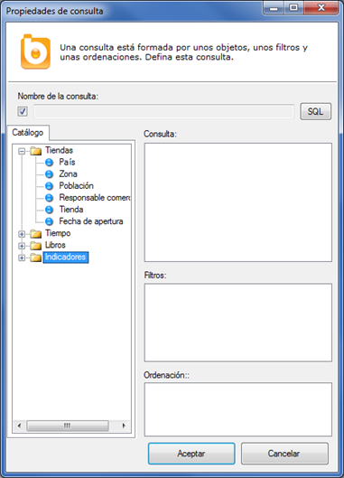

Generación automática de sentencias SQL
Los usuarios construyen las consultas arrastrando las dimensiones, indicadores y filtros desde el catálogo hasta el informe. Con esta información, Bingo Intelligence genera automáticamente las queries necesarias para obtener el resultado correcto.
Para construir las sentencias SQL, Bingo Intelligence tiene en cuenta:
- Las dimensiones, indicadores y filtros seleccionados en la consulta. Esto determina fundamentalmente la cláusula SELECT y WHERE.
- En la cláusula FROM se incluyen todas las tablas referenciadas en los objetos anteriores.
- Se buscan todas las relaciones necesarias para incluir todas las tablas anteriores.
- Se incluyen todas las tablas que se mencionan en las relaciones seleccionadas.
- Si en este proceso Bingo detecta que se han seleccionado varias tablas de hecho, o varios indicadores con distintos filtros, entonces se generan tantas sentencias SQL como sean necesarias.
- Finalmente, se ejecuta la consulta o consultas generadas, y se sincronizan los resultados, ofreciendo al usuario un único resultado en forma tabular.
El probador de consultas SQL
El probador de consultas SQL es una herramienta del “Diseñador de catálogos” que permite verificar el modo en que Bingo Intelligence construye cualquier consulta.
Para abrir esta herramienta se debe seleccionar la opción “Probar consulta sobre este catálogo” situada en el menú “Herramientas”.

Esta ventana sirve para definir la consulta, y es la misma que se utiliza en otros lugares de Bingo Intelligence para definir una consulta.
La consulta se define arrastrando las dimensiones, indicadores y filtros en los distintos paneles:
- En el panel “Consulta” se tienen que incluir las dimensiones e indicadores que se quiere que aparezcan como “columnas” en el resultado.
- En el panel “Filtro” se tienen que arrastrar los elementos que queremos filtrar. Si se arrastra un indicador o una dimensión, aparecerá un diálogo adicional para definir exactamente las propiedades de este filtro.
- En el panel “Ordenación” se debe especificar el orden en que debe aparecer el resultado.
Se puede comprobar la consultas o consultas generadas pulsando el botón “SQL”.
El probador de consultas sólo sirve para verificar la generación de las sentencias SQL, pero no es posible ejecutar propiamente la consulta generada. Para ello, es necesario crear una aplicación y definir un informe.